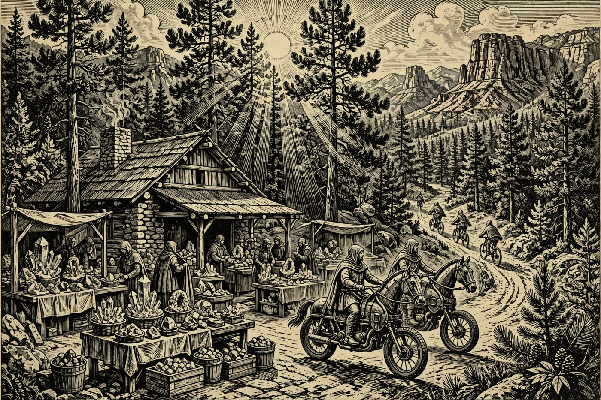

PAYSON — Hail, traveler, and a fair Sundas to you — the pines stand gold in the morning light, the sky is clear from the Rim to the valley road, and the Holds are wide awake. Here at home the dual-sport riders ride their second day of Howlin’ at the Moon out of the Payson Elks Lodge, while Sedona closes its Mountain Bike Festival under the red rocks and Show Low settles in for a Sunday song at AZTEX. And there is good news worth a cheer in the mead hall: voters gave Gila Community College an overwhelming vote of confidence, approving Proposition 425 by about 67 percent to lift the college’s outmoded spending limit — a win for every student in Rim Country, by the Nine.
Happening in the Holds Today
 Payson— 2026 Howlin’ at the Moon — Day Two — Payson Elks Lodge, 1206 N Beeline Hwy. The AMA/Beta National Dual Sport riders head out again today on fresh 50–60 mile loops through the forest around Payson, different roads from Saturday’s long run. Check-in runs 6:30–8:30 AM over the same hearty breakfast, and GPS track logs and a thank-you gift round out the day. Registration closed in October, so today belongs to the registered riders — and to everyone who loves the sound of the Hold’s trails humming till evening.
Payson— 2026 Howlin’ at the Moon — Day Two — Payson Elks Lodge, 1206 N Beeline Hwy. The AMA/Beta National Dual Sport riders head out again today on fresh 50–60 mile loops through the forest around Payson, different roads from Saturday’s long run. Check-in runs 6:30–8:30 AM over the same hearty breakfast, and GPS track logs and a thank-you gift round out the day. Registration closed in October, so today belongs to the registered riders — and to everyone who loves the sound of the Hold’s trails humming till evening. Sedona— 2026 Sedona Mountain Bike Festival — Final Day — Posse Grounds Park, 525 Posse Grounds Rd, running Friday through today, Sunday, November 8. The year’s great gathering of mountain bikers closes today with the expo, bike demos, shuttled rides on Sedona’s famous red singletrack, gear vendors, a beer garden, food trucks, skills clinics, and live bands. Passes are sold at the festival registration booth, so a traveler can still join the fun. Go early — the red rocks and the singletrack are at their best in the morning light.— Sedona Community Farmers Market — 2201 W State Route 89A, Sedona, today from 8:00 AM. The Sunday market fills its lot with local growers, bakers, and makers — fresh produce, bread, and small treasures to carry home to the Hearth. It is the gentle start to a Sedona day: shop the stalls first, then walk the town while the air is still cool. Valley Dwellers up for the weekend will find it an easy, friendly stop.
Sedona— 2026 Sedona Mountain Bike Festival — Final Day — Posse Grounds Park, 525 Posse Grounds Rd, running Friday through today, Sunday, November 8. The year’s great gathering of mountain bikers closes today with the expo, bike demos, shuttled rides on Sedona’s famous red singletrack, gear vendors, a beer garden, food trucks, skills clinics, and live bands. Passes are sold at the festival registration booth, so a traveler can still join the fun. Go early — the red rocks and the singletrack are at their best in the morning light.— Sedona Community Farmers Market — 2201 W State Route 89A, Sedona, today from 8:00 AM. The Sunday market fills its lot with local growers, bakers, and makers — fresh produce, bread, and small treasures to carry home to the Hearth. It is the gentle start to a Sedona day: shop the stalls first, then walk the town while the air is still cool. Valley Dwellers up for the weekend will find it an easy, friendly stop. Show Low— The Thirsty Band at AZTEX Coffee and Taproom — Show Low, today at 1 PM. An easygoing Sunday set at the taproom: coffee, a cold pour, and live music to close the weekend at a civilized hour. The room is friendly, the hour is kind to travelers, and the drive over from Payson runs through some of the prettiest pine country in the Holds. A good excuse for the scenic run while the sun is still high.
Show Low— The Thirsty Band at AZTEX Coffee and Taproom — Show Low, today at 1 PM. An easygoing Sunday set at the taproom: coffee, a cold pour, and live music to close the weekend at a civilized hour. The room is friendly, the hour is kind to travelers, and the drive over from Payson runs through some of the prettiest pine country in the Holds. A good excuse for the scenic run while the sun is still high. Prescott— CoffeeHouse Concert: John Coinman — Prescott Public Library, 215 E Goodwin St, today 2:00–3:30 PM. The award-winning Tucson singer-songwriter brings his Southwest-inspired songs to the library’s quiet hall, drawing on his solo work, film and television soundtracks, and his time with Kevin Costner & Modern West. Library hush, live songs, and the rare chance to clap indoors among the books. Arrive a little early for a good seat.— A Tribute to the Ole’ Cherokee Cowboy — Elks Theatre, 117 E Gurley St, Prescott, today at 3 PM. Billy Mata & The Texas Tradition honor the legendary Ray Price with classic hits, western swing, and stories from his long career, with Prescott fiddler Jordan Brambila joining the band. The historic Elks stage was made for music like this — warm, well-played, and full of heart. A fine way to spend a Sunday afternoon on the square.— 251st Marine Corps Birthday Ball — Prescott Resort, today, Sunday, November 8. Copper State Detachment 906 of the Marine Corps League hosts the ball with the traditional birthday ceremony and cake cutting, dinner, dancing, a guest speaker, and music. It honors the Marine Corps’ proud tradition and service, in the company of Marines, families, and friends. Dress fine, come proud, and raise a glass to 251 years.
Prescott— CoffeeHouse Concert: John Coinman — Prescott Public Library, 215 E Goodwin St, today 2:00–3:30 PM. The award-winning Tucson singer-songwriter brings his Southwest-inspired songs to the library’s quiet hall, drawing on his solo work, film and television soundtracks, and his time with Kevin Costner & Modern West. Library hush, live songs, and the rare chance to clap indoors among the books. Arrive a little early for a good seat.— A Tribute to the Ole’ Cherokee Cowboy — Elks Theatre, 117 E Gurley St, Prescott, today at 3 PM. Billy Mata & The Texas Tradition honor the legendary Ray Price with classic hits, western swing, and stories from his long career, with Prescott fiddler Jordan Brambila joining the band. The historic Elks stage was made for music like this — warm, well-played, and full of heart. A fine way to spend a Sunday afternoon on the square.— 251st Marine Corps Birthday Ball — Prescott Resort, today, Sunday, November 8. Copper State Detachment 906 of the Marine Corps League hosts the ball with the traditional birthday ceremony and cake cutting, dinner, dancing, a guest speaker, and music. It honors the Marine Corps’ proud tradition and service, in the company of Marines, families, and friends. Dress fine, come proud, and raise a glass to 251 years.
The Days Ahead
- Mon, Nov. 9— Daryl Felsberg at Hon-Dah Resort Hotel — near Show Low, Monday at 7 PM. A Monday-night stand-up set at the resort hotel — an uncommon treat in the White Mountains and a merry way to start the week. Travelers staying over after the weekend will find dinner and a show under one roof. Check the hotel for ticket word before you set out.
- Tue, Nov. 10— PAWS for Reading — Prescott Public Library, 215 E Goodwin St, Prescott, Tuesday at 3:30 PM. A calm therapy dog, a picture book, and a young reader who forgets to be nervous — that is the whole kind magic of this library hour for youth and school-age kids. Children read aloud to a patient, four-legged listener, and confidence grows page by page. Free, gentle, and well loved by local families.
- Wed, Nov. 11— Prescott Veterans Day Parade — Downtown Prescott, Wednesday, November 11. Opening activities begin at 10:30 AM at Cortez and Union streets, the parade steps off at 11:00 AM, and it pauses at 11:11 AM to mark the Armistice that ended the First World War. This year’s theme is “Remember the Past, Serve the Present, Inspire the Future.” Come stand with the Hold, wave a flag, and give thanks — downtown streets close from 8 AM, so arrive early.— Veterans Day Tribute — Sedona Heritage Museum, Uptown Sedona, Wednesday, November 11. The town’s official Veterans Day observance, hosted with the City of Sedona, gathers neighbors at the museum to honor those who served. It is a quiet, fitting stop in the middle of the week, under the red rocks. Come, stand with the Hold, and give thanks.
- Fri, Nov. 13— Verde Valley Pottery Festival — First Pick Friday — D.A. Ranch Vineyards, 1900 Dancing Apache Rd, Cornville, Friday 4–6 PM, $25 early access. The festival’s fifth year opens with a ticketed first look: first choice of handmade ceramic work by Arizona potters, plus D.A. Ranch wine, local food trucks, craft beer, and live music along Oak Creek. The free festival weekend follows Saturday and Sunday — but the finest pots go to those who come Friday.— Bully-Proof Your Child: Free Kids Workshop — 501 W Main St, Payson, Friday, November 13. A free 45-minute workshop that gives children plain, practical tools to stand tall and stay safe, taught in a friendly room where questions are welcome. Parents looking for one useful thing to do with the young ones this week need look no further. Check the listing for the start time before you go.
- Sat, Nov. 14— Verde Valley Pottery Festival — Free Festival Day — D.A. Ranch Vineyards, 1900 Dancing Apache Rd, Cornville, Saturday 10 AM–5 PM, free admission. Fifteen Arizona potters show and sell their work, with live demonstrations, hands-on activities, local food, estate wine, and live music across the ranch grounds. The festival is now a nonprofit in its fifth year, and Saturday is its biggest day. Bring a bag — nobody leaves empty-handed.— Honoring Prescott’s Heroes — Sharlot Hall Museum, Prescott, Saturday, November 14. The museum’s Living History Adventure explores the roles Fort Whipple and Fort Verde played in Arizona’s territorial history, while honoring the soldiers who served across the years and the heroes of today. Costumed interpreters, real stories, and a walk through Prescott’s own past. A worthy Saturday outing for the whole household.